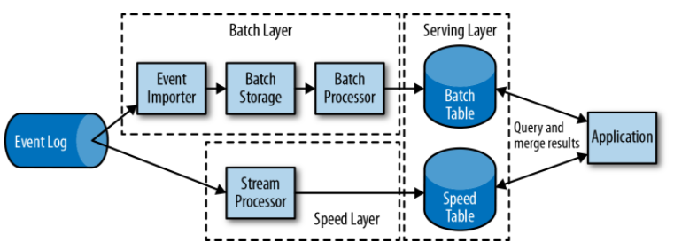

0. 简介
1. 状态化流处理概述
2. 流处理基础
3. Apache Flink 架构
4. 设置 Apache Flink 开发环境
5. DataStream API
6. 基于时间和窗口的算子
7. 有状态算子和应用
8. 读写外部系统
9. 搭建 Flink 运行流式应用
10. Flink 和流式应用运维
11. 还有什么？
Published with GitBook
1. 状态化流处理概述
1. 状态化流处理概述
传统数据处理框架
事务型处理
数据存储层+数据处理层
e.g. ERP、CRM、web应用
分析型处理
定期报告查询
即席查询（ad-hoc）
状态化流处理
事件驱动型应用：实时推荐、模式识别、异常检测
数据管道
流式分析
开源流处理历史
Lambda 架构：提速层（提速表）
故障处理机制
事件时间和顺序依赖

results matching "
"
No results matching "
"